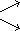
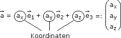
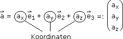
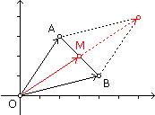
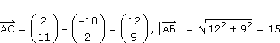

VI. VEKTORRECHNUNG
A. Vektoren als Pfeile
B. Koordinatendarstellung
C. Skalarprodukt
D. Vektorprodukt
E. Abstandsberechnungen
F. Gerade/Ebene in Vektorform
 Ergänzungen und Details
Ergänzungen und DetailsUnter euklidischen Vektoren stellen wir uns in der Mathematik Schiebungen in der Ebene bzw. im Raum vor (ein weiteres Beispiel sind in einem Punkt angreifende Kräfte). Pfeile, die von Ausgangs- zu Endpunkten der Schiebung führen, haben die gleiche Richtung (= parallele Trägergeraden), Orientierung und Länge. Jeder dieser Pfeile repräsentiert damit den Vektor.
AA'` 
Pfeil von A nach A'
dadurch repräsentierte Vektor: AA'` = BB'`
2 Vektoraddition
• Die Vektoraddition entspricht der Hintereinanderausführung von Schiebungen: Wenn wir zwei aneinandergehängte Pfeile als Ausgangssituation wählen, führt der Summenvektor vom Fußpunkt des ersten Pfeils zur Spitze des zweiten Pfeils.
Dasselbe liefert die Parallelogrammregel (inspiriert von Kräften, die im selben Punkt angreifen):
• Wenn wir zwei Pfeile mit demselben Fußtpunkt als Ausgangsituation wählen und zu einem Parallelogramm ergänzen, führt der Summenvektor vom gemeinsamen Fußpunkt zur gegenüberliegenden Ecke.
Das neutrale Element der Vektoraddition heißt Nullvektor und ist die Schiebung, die alles an ihrem Platz belässt. Inverse Elemente haben daher die Aufgabe, alles an die ursprüngliche Position zurückzuschieben, d.h. wir erhalten sie durch Umdrehen der Pfeile.
3 Vektorsubtraktion
•Die Vektorsubtraktion ist die Umkehrung der Vektoraddition und lässt sich als solche schreiben, indem man den zweiten Pfeil umdreht.
Schneller geht's mit der Spitze-minus-Fuß-Regel:
• Wenn wir zwei Pfeile mit demselben Fußtpunkt als Ausgangsituation wählen, verbindet der Differenzvektor ihre Spitzen und zwar so, dass der erste Operand zur Spitze des Differenzpfeils zeigt und der zweite zum Fuß.
4 Multiplikation/Division mit reeller Zahl
• Die Multiplikation mit reeller Zahl skaliert den Vektor, d.h. der Pfeil wird entsprechend gestreckt/gestaucht und bei negativer Zahl zudem umgedreht. Bei der Division durch reelle Zahl wird der Vektor mit dem Kehrwert der Zahl multipliziert.
• Der Betrag eines Vektors ist die Länge "des" Pfeils. Einen Vektor normieren, heißt, ihn durch seinen Betrag dividieren. Das ergibt einen Pfeil mit Länge 1, einen sogenannten Einheitsvektor
a`0 :=
a`
|a`|
Die obige Rechenstruktur, losgelöst von einer konkreten Bedeutung der Operatoren/Operanden, heißt reeller Vektorraum. Soll heißen: Wir haben Hauptobjekte (Vektoren) und die reellen Zahlen als Nebenobjekte (Skalare). Erstere sind addierbar und mit zweiteren multiplizierbar, sodass:
| Vektoraddition |
assoziativ kommutativ neutrales Element inverse Elemente |
| Multiplikation-mit-Skalar |
(ts)a` = t(sa`) (t+s)a` = ta`+sa` t(a`+b`) = ta`+tb` 1a` = a` |
• • Wenn Vektoren mit Zahlen multipliziert und aufaddiert werden, sprechen wir von einer Linearkombination. Mehrere Vektoren heißen linear unabhängig, wenn keiner davon als Linearkombination der übrigen Vektoren darstellbar ist. Die maximale Anzahl linear unabhängiger Vektoren heißt Dimension des Vektorraums.
• • In einem n-dimensionalen Vektorraum bilden linear unabhängige Vektoren a`1,... a`n eine Basis in dem Sinn, dass sich jeder Vektor eindeutig als Linearkombination der Basisvektoren darstellen lässt. Die Zahlen, die den Vektor so charakterisieren, heißen Koordinaten des Vektors.
Begründung: Jedes a` muss als Linearkombination von a`1,... a`n darstellbar sein, sonst wäre die Dimension > n. Und verschiedene Darstellungen
a` = t1a`1 + ... + tna`n = s1a`1 + ... + sna`n
kann es nicht geben, sonst wären a`1,... a`n nicht linear unabhängig, weil beispielsweise aus t1 ≠ s1 folgen würde:
(t1–s1)a`1 = (s2–t2)a`2 + ... + (sn–tn)a`n |:(t1–s1)
Aufgabe 1: Stelle a) GF`, b) BE`, c) CN` als Linearkombination der linear unabhängigen Vektoren BM`, BF`, BC` dar.
a) GF` = –BC`
b) BE` = 2BM` – BF` – BC`
c) CN` = BM` – 0,5BF` – 1,5BC`
Im Folgenden legen wir der Ebene bzw. dem Raum ein kartesisches Koordinatenssystem zugrunde und nehmen die Einheitsvektoren in Richtung der Koordinatenachsen als Basis:


Was passiert mit den Koordinaten, wenn wir die anhand von Pfeilen eingeführten Operationen ausführen?

Aufgabe 2: Berechne die resultierende Kraft in Koordinatendarstellung mittels Vektoraddition und anschließend ihren Betrag.
Wir machen uns zunutze, dass wir Kosinus und Sinus ursprünglich als xy-Koordinaten des Einheitszeigers definiert haben. Wenn wir diesen auf die Länge r strecken, passiert dasselbe mit seinen Koordinaten, also:
|F`res| = √12,642 + 58,922 = 60,26 N
3 Analytische Geometrie
In der analytischen Geometrie werden geometrische Objekte nicht mit Zirkel und Lineal konstruiert, sondern berechnet. Dazu zerlegen wir sie in Punkte, die in einem kartesischen Koordinatensystem mit Ursprung O liegen. Einen Punkt P charakterisieren wir über seinen
• Ortsvektor P` := OP`
Aufgabe 3: Berechne den Vektor AB`, der den Punkt A(1|3) in den Punkt B(5|1) schiebt.
|
Spitze-minus-Fuß-Regel: |
Aufgabe 4: Berechne den Mittelpunkt M der Strecke AB[ A(2|3), B(4|1) ].
|  |
Arithmetisches Mittel: |
Aufgabe 5: Wo liegt der neue Endpunkt C, wenn man die Strecke AB[ A(–1|5), B(3|2) ] über B hinaus um 2 Einheiten verlängert?
Vektoren lassen sich nicht nur mit einem Skalar multiplizieren, sondern auch untereinander und das auf zwei Arten. Die Motivation dafür ergibt sich etwa aus physikalischen Konzepten wie Arbeit und Drehmoment.
1 In Pfeildarstellung
• Das Skalarprodukt zweier Pfeile ergibt einen Skalar und zwar die volle Länge des einen Pfeils mal dem parallelen Anteil des anderen. Dazu kommt ein positives/negatives Vorzeichen, je nachdem, ob der parallele Anteil gleich/entgegengesetzt orientiert ist.
• a`·b` = |a`||b`|cosγ
Bem: Das Skalarprodukt ergibt genau dann null, wenn beide Pfeile normal aufeinander stehen oder ein Nullvektor darunter ist.
2 In Koordinatendarstellung
• a`·b` = axbx + ayby + azbz
Aufgabe 6: Berechne den Winkel γ, den die Vektoren a` und b` einschließen.
a` = 4e`1 + 6e`2 + 3e`3 und b` = 7e`1 + e`2 – 5e`3
a` = 4e`1 + 6e`2 + 3e`3 und b` = 7e`1 + e`2 – 5e`3
a`0·b`0 = cosγ
|a`| = √42 + 62 + 32 = 7,81
|b`| = √72 + 12 + (–5)2 = 8,66
γ = acos
a`·b`
|a`||b`|
19
7,81·8,66
Mit dem Skalarprdukt (= 0?) können wir auf Rechtwinkeligkeit prüfen, mit dem Vektorprodukt können wir Rechtwinkeligkeit erzeugen.
1 In Pfeildarstellung
• Das Vektorprodukt zweier Pfeile ergibt einen Vektor, der normal auf beiden steht. Um die Orientierung zu erhalten, dreht man den ersten Pfeil auf kürzestem Weg in den zweiten und schaut, wohin sich eine mitgedrehte Rechtsschraube bohrt. Der Betrag ist die volle Länge des einen Pfeils mal dem normalen Anteil des anderen (= Fläche des Parallelogramms, das beide Pfeile aufspannen).
Bem: Das Vektorprodukt ergibt genau dann den Nullvektor, wenn beide Pfeile in derselben Richtung liegen oder ein Nullvektor darunter ist.
Aufgabe 7: Bestimme die Orientierung des Vektorprodukts für die folgenden in der Zeichenebene liegenden Pfeile.
a) a`xb` = O× b) b`xa` = O· c) c`xd` = O×
2 In Koordinatendarstellung
Die Determinante ist ein Rechenschema, über das die Elemente einer quadratischen Tabelle zusammengerechnet werden. Im 2x2-Fall als
Produkt der Hauptdiagonalelemente (\) minus Produkt der Nebendiagonalelemente (/).
Damit lässt sich die 90°-Drehung, die bei 2-koordinatigen Vektoren an die Stelle des Vektorprodukts tritt, so schreiben:
Im 3x3-Fall kommen zur langen Diagonale die kurzen darüber und darunter dazu, die mit dem am weitest entfernten Element vervollständigt werden:
Aufgabe 8: Ein Fachwerk aus starren Stäben bleibt in Ruhe, wenn Kräfte F`i so einwirken, dass bei beliebig gewählter Drehachse
 F`i = o` und r`ixF`i = o` mit r`i = "Kraftarm" von Drehachse zum Angriffspunkt von F`i
F`i = o` und r`ixF`i = o` mit r`i = "Kraftarm" von Drehachse zum Angriffspunkt von F`i
Bestimme damit die Auflagekräfte F`1, F`2, F`3 in folgender Zeichnung:
F`i = o` und r`ixF`i = o` mit r`i = "Kraftarm" von Drehachse zum Angriffspunkt von F`iBestimme damit die Auflagekräfte F`1, F`2, F`3 in folgender Zeichnung:
Ursprung sei der linke Auflagepunkt, x-Achse nach rechts, y-Achse nach oben, z-Achse (= Drehachse) aus der Zeichenebene heraus.


Vektoren sind genau dann gleich, wenn ihre Koordinaten gleich sind. Aus obigen Vektorgleichungen folgen daher die Zahlengleichungen:
(1) F1 – 2,5 = 0
 F1 = 2,5 kN
F1 = 2,5 kN
(2) F2 + F3 – 7,33 = 0
(3) 7F3 – 18,9 = 0 F3 = 2,7 kN F2 = 4,63 kN
F3 = 2,7 kN F2 = 4,63 kNWarum spielt die Wahl der Drehachse keine Rolle?
(a` + r`i) x F`i = a` x F`i + r`i x F`i = a` x F`i + r`i x F`i
|
Vom Punkt P aus laufen wir auf kürzestem Weg, das sei in Richtung n`, zur Geraden g[A,a`]. Diesen Weg können wir so oder so berechnen, je nachdem, was einfacher ist:
• d(P,g) |AP`·n`0| |AP`xa`0| |
Aufgabe 9: Berechne den Abstand, den der Punkt P(3|–6) von der Geraden g[ A(–2|–4), B(5|2) ] hat.
d(P,g) =
|AP`·n`|
|n`|
44
9,22
Aufgabe 10: Berechne den Abstand, den der Punkt P(–2|2|5) von der Geraden g[ A(0|–2|4), B(1|3|9) ] hat.
d(P,g) =
|AP`xa`|
|a`|
23,28
7,14
Aufgabe 11: Berechne den Abstand, den der Punkt P(–5|4|3) von der Ebene ε[ A(1|2|–6), B(3|2|1), C(0|3|–2) ] hat.
d(P,ε) = d(P,g'), wobei g' = Normalprojektion von g[A,P] auf ε.
d(P,ε) =
|AP`·n`|
|n`|
30
16,67
|
Mit einem Vektor a`, der in der Geraden liegt ("Richtungsvektor"), und einem bekannten Geradenpunkt A können wir beliebige Geradenpunkte X so charakterisieren:
• X`(t) = A` + ta` Gerade in xy-Ebene: Mit einem Vektor n`, der normal auf die Gerade steht, und einem bekannten Geradenpunkt A können wir beliebige Geradenpunkte X(x,y) auch dadurch charakterisieren, dass der Normalvektor und ein Vektor, der in der Geraden liegt, einen rechten Winkel einschließen: • n`·(X` – A`) = 0 |
Dieses Skalarprodukt ausgerechnet führt zur Zahlengleichung
ax + by = c
Im Rückschluss folgt daraus, dass die Lösungsmenge einer linearen Gleichung in x und y eine Gerade in der xy-Ebene ist und die Koeffizienten einen Normalvektor dieser Geraden bilden. Falls b ≠ 0, können wir y freistellen und erhalten die Gleichung der linearen Funktion
y(x) = kx + d
Dabei ist d = y(0) und k die Steigung Δy/Δx.
Aufgabe 12: Bestimme die Koordinatengleichung y = kx + d für die folgenden Geraden.
Eine Möglichkeit ist, in die Normalvektordarstellung zu wechseln und das Skalarprodukt auszurechnen:
a) = 3(x – 2) + 2(y – 1) = 0
y = –1,5 x + 4
b) … y = 3x – 5
y = 3x – 5c) …
y = –0,7x + 2,5
Aufgabe 13: Wandle die Koordinatengleichung folgender Geraden in eine Parameterdarstellung um.
a) y = 2x + 3 b) y = x – 4 c) 3x + 5y = 10
a) y = 2x + 3 b) y = x – 4 c) 3x + 5y = 10
Eine Möglichkeit ist, wie beim Zeichnen linearer Funktionen vorzugehen: Für A` nehmen wir den Ortsvektor des Geradenpunkts auf der y-Achse und den Richtungsvektor liefert das Steigungsdreieck Δx = 1 und Δy = k:

2 Anwendung: In/Umkreis
Aufgabe 14: Gegeben ist das Dreieck ABC[ A(–10|2), B(14|–5), C(2|11) ]. Wo liegt der Inkreismittelpunkt?
Der Inkreis berührt das Dreieck innen an allen drei Seiten. Wir konzentrieren uns auf zwei Berührungen und erkennen, dass die Winkelhalbierende durch den Kreismittelpunkt geht. Wir brauchen also nur zwei Winkelhalbierende zu schneiden:
wα: X` = A` + t(AB`0 + AC`0)
wβ: X` = B` + s(BA`0 + BC`0)
Mi = wα wβ
wβ
wβ: X` = B` + s(BA`0 + BC`0)
Mi = wα
wβ
Umgeschrieben in ein System von Zahlengleichungen:
(1) –10 + 1,76t = 14 – 1,56s ·1,08
(2) 2 + 0,32t = –5 + 1,08s·1,56
(2) 2 + 0,32t = –5 + 1,08s·1,56

–7,68 + 2,4t = 7,32 t = 6,25
t = 6,25
Aufgabe 15: Gegeben ist das Dreieck ABC[ A(–4|–2), B(9|1), C(5|7) ]. Wo liegt der Umkreismittelpunkt?
Der Umkreis berührt das Dreieck außen an allen drei Ecken. Wir konzentrieren uns auf zwei Berührungen und erkennen, dass die Mittelsenkrechte durch den Kreismittelpunkt geht. Wir brauchen also nur zwei Mittelsenkrechte zu schneiden:
ma: X` = + tBC`'_
mb: X` = + sCA`'_
Mu = ma mb
B`+C`
2
mb: X` =
C`+A`
2
Mu = ma
mbUmgeschrieben in ein System von Zahlengleichungen:
(1) 7 – 6t = 0,5 + 9s
(2) 4 – 4t = 2,5 – 9s
(2) 4 – 4t = 2,5 – 9s
11 – 10t = 3 t = 0,8
t = 0,8Frage: Wie bestimmt man die Richtungsvektoren n`a, n`b der Mittelsenkrechten bei 3-koordinatigen Eckpunkten?
n` = AB`xAC`
n`a = n`xBC`, n`b = n`xCA`3 Ebene in Parameter- und Normalvektordarstellung
|
Mit zwei linear unabhängigen Vektoren a`, b`, die in der Ebene liegen ("Spannvektoren"), und einem bekannten Ebenenpunkt A können wir beliebige Ebenenpunkte X so charakterisieren:
• X`(t,s) = A` + ta` + sb` Ebene im xyz-Raum: Mit einem Vektor n`, der normal auf die Ebene steht, und einem bekannten Ebenenpunkt A können wir beliebige Ebenenpunkte X(x,y,z) auch dadurch charakterisieren, dass der Normalvektor und ein Vektor, der in der Ebene liegt, einen rechten Winkel einschließen: • n`·(X` – A`) = 0 |
Dieses Skalarprodukt ausgerechnet führt zur Zahlengleichung
ax + by + cz = d
Im Rückschluss folgt daraus, dass die Lösungsmenge einer linearen Gleichung in x, y, z eine Ebene im xyz-Raum ist und die Koeffizienten einen Normalvektor dieser Ebene bilden. Falls c ≠ 0, können wir z freistellen und erhalten die Gleichung der linearen Funktion
z(x,y) = k1x + k2y + e
Dabei ist e = z(0,0), k1 die Steigung in x-Richtung und k2 die Steigung in y-Richtung.
Aufgabe 16: Stelle die Gleichung der Ebene ε[ A(3|–4|–2), B(2|4|1), C(5|0|1) ] wie oben beschrieben dar.
Parameterdarstellung:
Normalvektordarstellung:
Implizite Koordinatengleichung:
12(x – 3) + 9(y + 4) – 20(z + 2) = 0
12x + 9y – 20z = 40
Explizite Koordinatengleichung:
–20z = –12x – 9y + 40 |:(–20)
z = 0,6x + 0,45y – 2
Aufgabe 17: Der Punkt P(–2|16|–11) wird an der Ebene ε: 2x – 5y + 3z = –3 gespiegelt. Wo liegt der gespiegelte Punkt P'?
n` aus Koordinatengleichung von ε ablesen
g: X` = P` + tn`
S = g ε
P`' = P` + 2PS`
g: X` = P` + tn`
S = g
εP`' = P` + 2PS`
 ε: 2(–2 + 2t) – 5(16 – 5t) + 3(–11 + 3t) = –3 t = 3
ε: 2(–2 + 2t) – 5(16 – 5t) + 3(–11 + 3t) = –3 t = 3